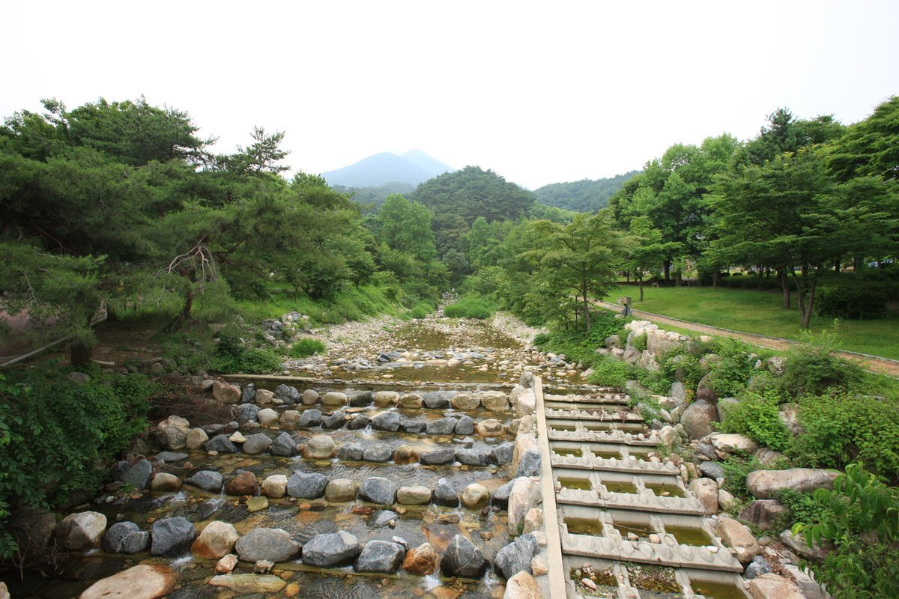
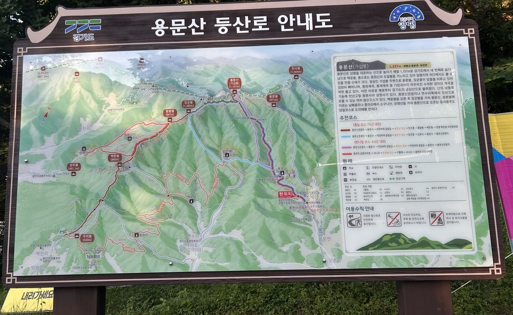
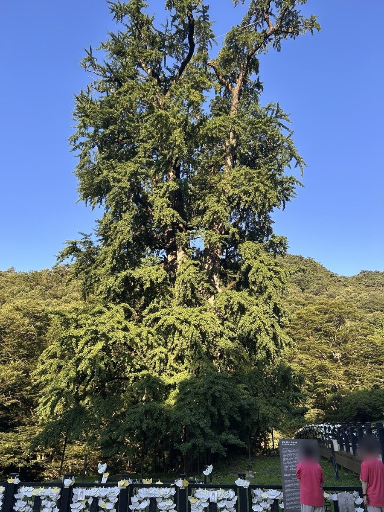
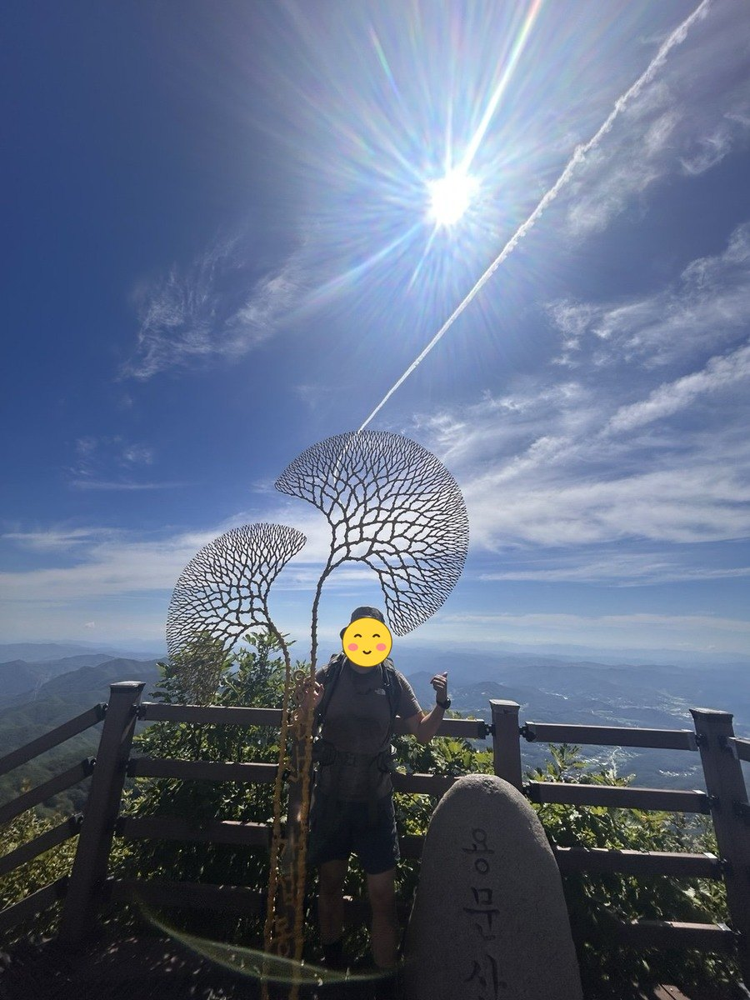
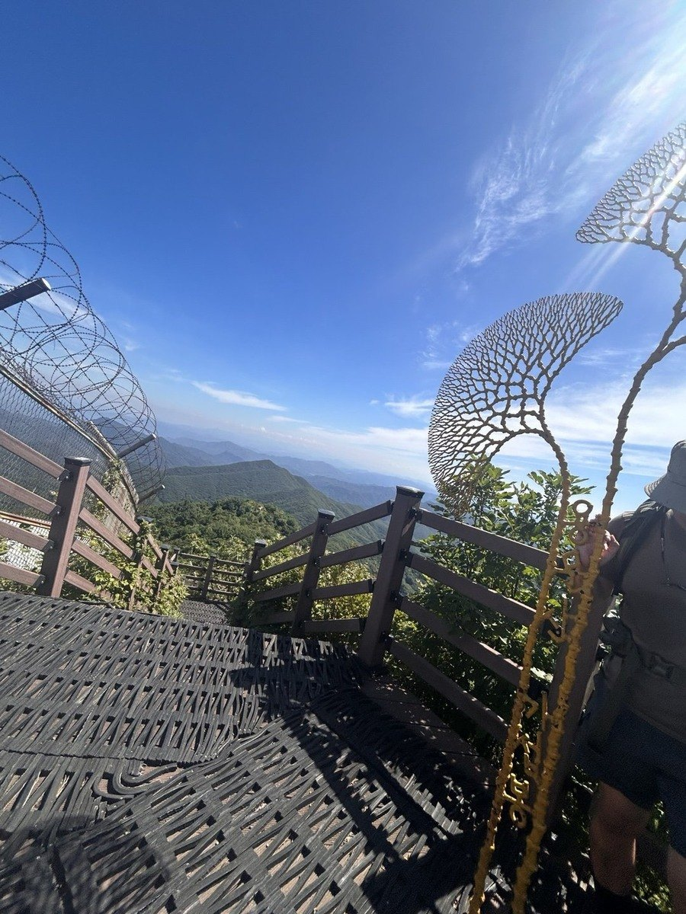
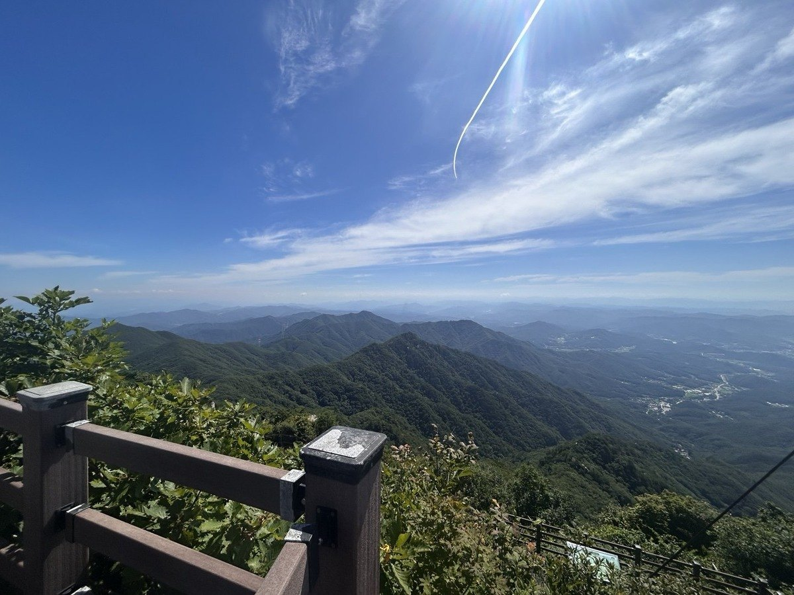
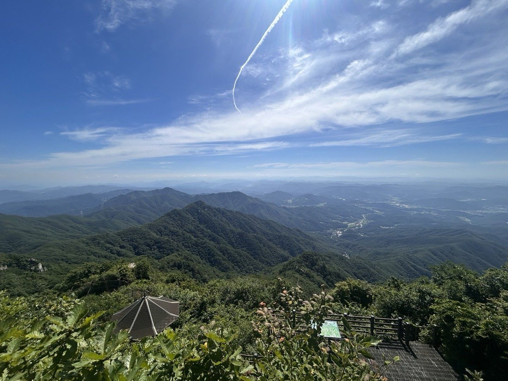
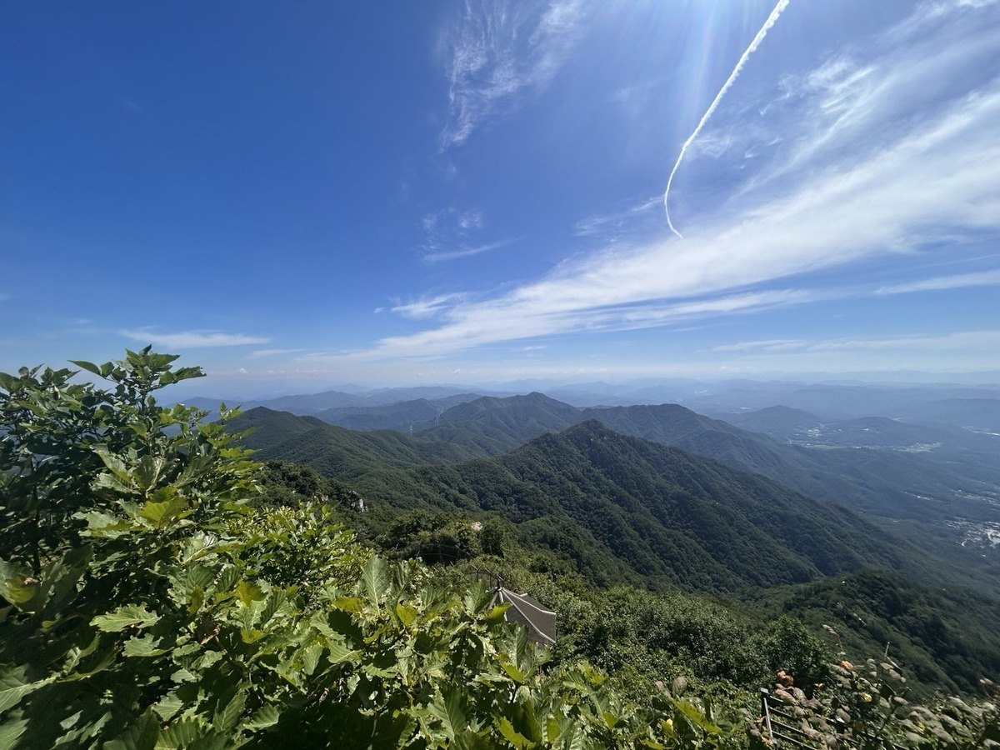
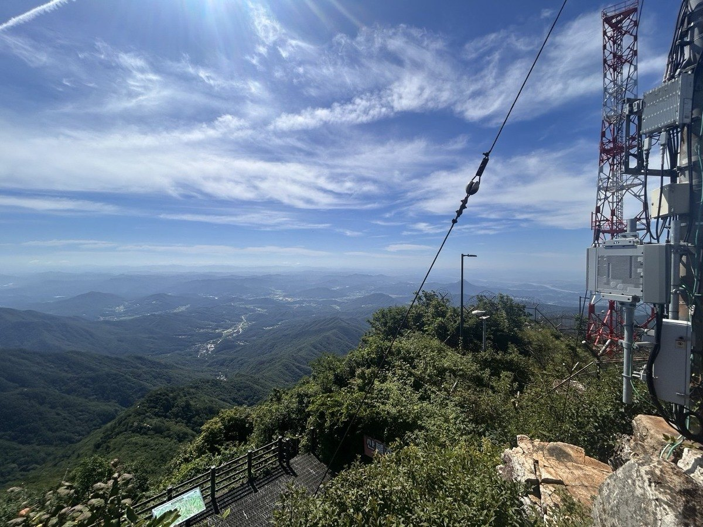
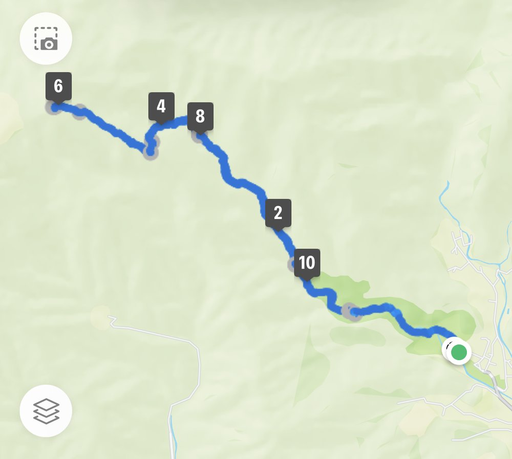

용문산은 양평을 대표하는 산으로 정상은 가섭봉(1157m)입니다. 산 아래 용문사에는 천연기념물로 지정된 천년 은행나무가 있어, 산행과 별개로 찾는 사람이 많습니다.
가장 무난한 코스는 용문산관광지 주차장에서 용문사와 마당바위를 지나 능선을 타고 정상에 오르는 길입니다. 3시간 정도이며 직등로라 초보자도 접근할 수 있습니다.
길게 걸으려면 가섭봉에서 장군봉을 거쳐 상원사와 은행나무로 내려오는 순환을 택합니다. 7시간 정도 걸리는 하루 코스입니다.
등반기록
용문산관광지 주차장 → 용문사(은행나무) → 계곡길 → 마당바위 → 가섭봉 정상 → 마당바위 → 용문사 → 주차장
용문산관광지에서 출발, 용문사 은행나무
토요일 아침 6시 24분, 용문산관광지 주차장에서 출발했습니다. 한여름 산행이라 일찍 나섰네요.
용문사에 들러 천연기념물인 은행나무부터 올려다봤습니다. 가까이서 보니 크기가 정말 대단하더군요.


계곡길 따라 가섭봉으로
용문사를 지나 계곡길로 접어들어 마당바위를 거쳐 능선으로 올라섰습니다. 한여름 더위에 가파른 오르막이 이어져 자주 쉬어 가며 천천히 올랐네요.
용문산 정상 가섭봉, 1,157m
10시 16분에 정상 가섭봉에 도착했습니다. 출발한 지 3시간 50분 만이네요. 은행잎 모양 조형물이 서 있는 정상에서 40분쯤 쉬며 풍경을 즐겼습니다.
날씨가 맑아 파란 하늘 아래로 겹겹이 이어진 산줄기가 시원하게 내려다보였습니다.






마당바위에서 쉬고 용문사로 하산
10시 55분에 하산을 시작해 마당바위 부근에서 30분 가까이 쉬었고, 용문사에 다시 들렀다가 14시 54분에 주차장으로 돌아왔습니다. 총 11.9km, 8시간 29분이 걸린 긴 하루였네요.

한여름 더위에 힘들었지만, 맑은 하늘 아래 가섭봉에서 본 조망이 그만큼 보답해 준 산행이었습니다.
이 산의 포인트
- 정상 가섭봉(1157m)
- 용문사 천년 은행나무 — 천연기념물
- 용문사 기점 직등로는 3시간
- 가섭봉~장군봉 순환은 7시간의 하루 코스
등산 코스
| 코스 | 거리 | 소요 | 난이도 |
|---|---|---|---|
| 용문사 직등 (대표) 용문산관광지 주차장 → 용문사 → 마당바위 → 능선 → 가섭봉 |
약 4km(편도) | 3시간 | 중 |
| 장군봉 순환 신점리 주차장 → 용문사 → 마당바위 → 가섭봉 → 장군봉 → 상원사 → 은행나무 → 주차장 |
약 12km | 7시간 | 상 |
| 920봉 단축 순환 신점리 주차장 → 용문사 → 안부 갈림길 → 920봉 → 계곡 → 용문사 → 주차장 |
약 8km | 3시간 20분 | 중 |
인증장소
정상인 가섭봉 표지석 앞에서 인증합니다. 장군봉과 혼동하지 마세요.
가는 길
- 자가용
- 용문산관광지 주차장을 이용합니다. 관광지 입장료가 있습니다.
- 대중교통
- 경의중앙선 용문역에서 용문사행 버스를 이용합니다. 대중교통 접근이 좋은 편입니다.
주차장
- 용문사관광지 주차장경기 양평군 용문면 신점리
용문사 은행나무와 함께 있는 대표 들머리입니다. 정상(가섭봉)까지는 상당히 가파릅니다.
- 사나사 주차장경기 양평군 옥천면 용천리
백운봉을 거쳐 오를 때 이용합니다.
주차 요금과 면수는 자주 바뀌고 성수기에는 임시 주차장·셔틀이 운영되기도 합니다. 출발 전에 지도 앱이나 공원 사무소로 한 번 더 확인하세요.
맛집
양평은 더덕과 한우의 고장입니다. 용문사 입구는 더덕정식 거리로, 더덕구이와 제육을 함께 내는 쌈밥정식이 기본입니다. 양평 옥천냉면도 알려져 있습니다.
- 한마당식당들머리에서 1.3km경기도 양평군 용문면 용문산로628번길 2
- 용문산중앙식당들머리에서 1.1km경기도 양평군 용문면 용문산로 644
- 시월애들머리에서 4.1km경기도 양평군 용문면 용문산로 278
- 예사랑들머리에서 6.3km경기도 양평군 용천로 333
- 마당곤드레밥들머리에서 4.4km경기도 양평군 용문면 용문산로 239
한국관광공사에 등록된 음식점입니다. 맛집 순위가 아니며, 영업시간과 휴무일은 바뀔 수 있으니 먼 길이라면 미리 전화해 보세요.
언제 가면 좋은가
가을 은행나무와 단풍이 절정입니다. 이 시기 용문사 일대는 매우 붐빕니다. 겨울에는 상단 능선 결빙에 주의하세요.
알아두면 좋은 것
- 전철로 접근할 수 있어 차 없이 다녀오기 좋습니다.
- 정상 직전 구간이 가파르니 마당바위에서 페이스를 조절하세요.
- 하산 후 용문사 은행나무를 함께 보는 일정이 일반적입니다.